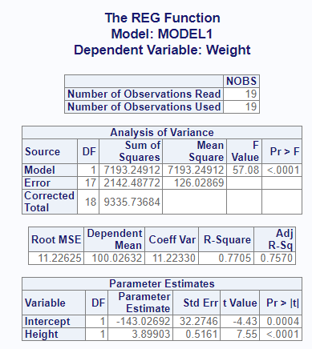
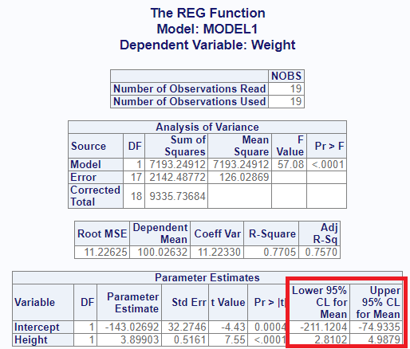
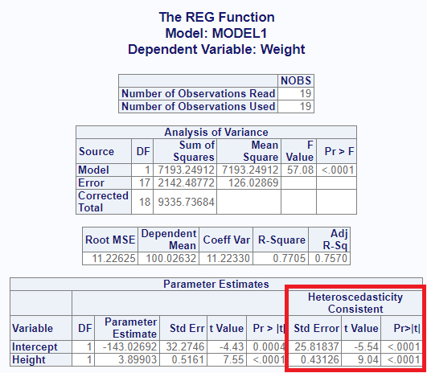
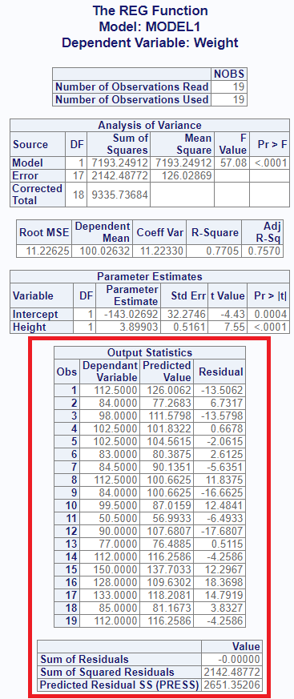
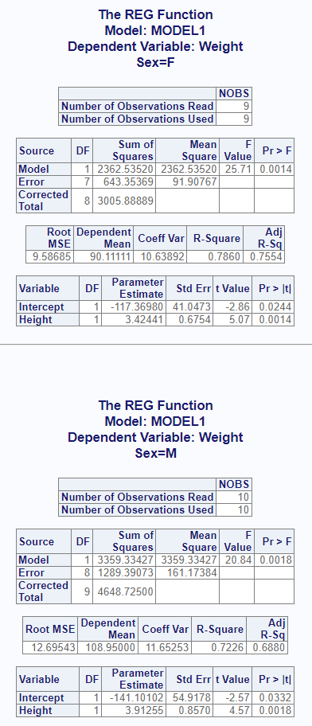
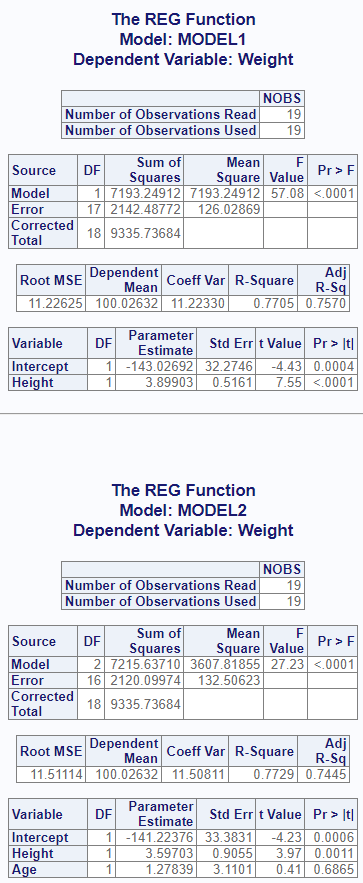
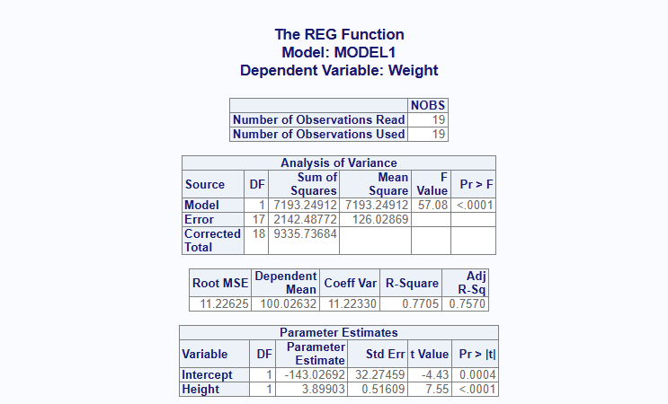
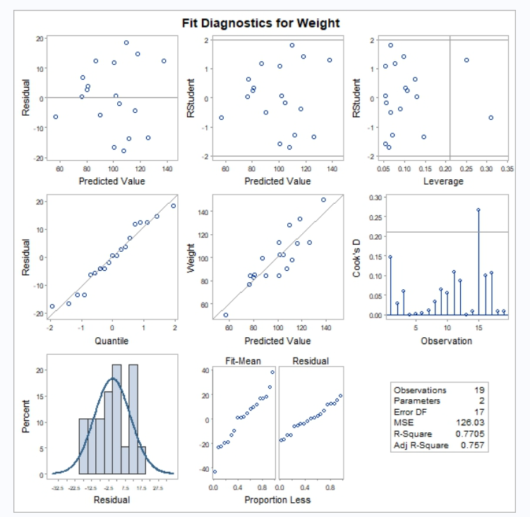

The proc_reg() function replicates a SAS® PROC REG
procedure. It is used to perform a regression analysis. The function is
both interactive and returns datasets.
Create Sample Data
Below is some sample data. This sample data shows Sex, Age, Height, and Weight for a group of students. In this example, we’ll examine the relationship between Weight and Height:
# Create sample data
cls <- read.table(header = TRUE, text = '
Name Sex Age Height Weight
Alfred M 14 69.0 112.5
Alice F 13 56.5 84.0
Barbara F 13 65.3 98.0
Carol F 14 62.8 102.5
Henry M 14 63.5 102.5
James M 12 57.3 83.0
Jane F 12 59.8 84.5
Janet F 15 62.5 112.5
Jeffrey M 13 62.5 84.0
John M 12 59.0 99.5
Joyce F 11 51.3 50.5
Judy F 14 64.3 90.0
Louise F 12 56.3 77.0
Mary F 15 66.5 112.0
Philip M 16 72.0 150.0
Robert M 12 64.8 128.0
Ronald M 15 67.0 133.0
Thomas M 11 57.5 85.0
William M 15 66.5 112.0')Basic Regression
If no options are specified, the proc_reg() function
will produce an interactive report in the RStudio viewer. The report
contains four tables:
- NObs: The number of used and unused observations in the input dataset. If there are missing values in any of the dependent or independent variables, these observations will be removed from the input dataset, and a count of observations with missing values will also be shown in this table.
- ANOVA: A table showing the Analysis of Variance for the model, the Error, and a Corrected Total. This table includes the Degrees of Freedom, Sum of Squares, Mean Square, and the F and P values for the model.
- FitStatistics: The Fitness table shows measures related to fitness, such as the Root MSE, R-Square value, and Adjusted R-Square.
- ParameterEstimates: This table includes parameter estimates for the y intercept and any independent variables. These values can be used to construct the model. This table also contains the t and p-values necessary to determine the significance of the coefficient.
# Turn off printing for CRAN checks
options("procs.print" = FALSE)
# Basic operation
proc_reg(cls, Weight ~ Height)
Statistics Options
The proc_reg() function has two ways to pass optional
statistics: stats and options.
The stats parameter contains options that are normally
passed on the “model” statement in SAS® PROC REG. Here is a table of
some of the available stats keywords:
| Keyword | Description |
|---|---|
| adjrsq | Adds adjusted r-square value to the output dataset. |
| clb | Requests confidence limits be added to the interactive report. |
| edf | Includes the number of regressors, the error degress of freedom, and the model r-square to the output dataset. |
| hcc | The “hcc” statistics keyword requests that heteroscedasticity-consistent standard errors of the parameter estimates be sent to the interactive report. |
| mse | Computes the mean squared error for each model and adds to the output dataset. |
| p | Computes predicted and residual values and sends to a separate table on the interactive report. |
| press | Includes the predicted sum of squares statistic in the output dataset. |
| seb | Outputs the standard errors of the parameter estimates to the output dataset. |
| spec | Adds the “White’s test” table to the interactive output. |
| sse | Adds the error sum of squares to the output dataset. |
Here is a table of some of the options keywords:
| Keyword | Description |
|---|---|
| alpha | The “alpha =” option will set the alpha value for confidence limit statistics. |
| noprint | Turns off the interactive report that is sent to the viewer. |
| outseb | The “outseb” option is used to request the standard errors be sent to the output dataset. |
| tableout | The “tableout” option is used to send standard errors, t-statistics, p-values, and confidence limits to the output dataset. |
Output Dataset Options
In addition to the interactive report shown above, the
proc_reg() function produces output datasets. You can save
these datasets in a variable and use it for additional analysis or
reporting. Here is how to save the default output dataset:
# Output dataset
res1 <- proc_reg(cls, Weight ~ Height)
# View results
res1
# MODEL TYPE DEPVAR RMSE Intercept Height Weight
# 1 MODEL1 PARMS Weight 11.22625 -143.0269 3.89903 -1The default output dataset contains parameter estimates and root means squared error. If you want the standard errors, you can use the “outseb” option.
# Output dataset using "outseb" option
res2 <- proc_reg(cls, Weight ~ Height, options = outseb)
# View results
res2
# MODEL TYPE DEPVAR RMSE Intercept Height Weight
# 1 MODEL1 PARMS Weight 11.22625 -143.02692 3.8990303 -1
# 2 MODEL1 SEB Weight 11.22625 32.27459 0.5160939 -1You can add more statistics to this dataset using various options. For example, you can add the “PRESS”, error degrees of freedom, and r-squared statistic in the following way:
# Output dataset using "press" and "edf" options
res3 <- proc_reg(cls, Weight ~ Height, options = v(press, edf))
# View results
res3
# MODEL TYPE DEPVAR RMSE PRESS Intercept Height Weight IN P EDF RSQ
# 1 MODEL1 PARMS Weight 11.22625 2651.352 -143.0269 3.89903 -1 1 2 17 0.7705068The “tableout” option sends standard error, confidence limits, t, and p-values to the output dataset:
# Output dataset using "tableout" option
res3 <- proc_reg(cls, Weight ~ Height, options = tableout)
# View results
res3
# MODEL TYPE DEPVAR RMSE Intercept Height Weight
# 1 MODEL1 PARMS Weight 11.22625 -1.430269e+02 3.899030e+00 -1
# 2 MODEL1 STDERR Weight 11.22625 3.227459e+01 5.160939e-01 NA
# 3 MODEL1 T Weight 11.22625 -4.431564e+00 7.554885e+00 NA
# 4 MODEL1 PVALUE Weight 11.22625 3.655789e-04 7.886816e-07 NA
# 5 MODEL1 L95B Weight 11.22625 -2.111204e+02 2.810167e+00 NA
# 6 MODEL1 U95B Weight 11.22625 -7.493348e+01 4.987893e+00 NAIf you want to return the statistics from the interactive report as
data, you can do that using output = "report":
# Output dataset using "report" output
res4 <- proc_reg(cls, Weight ~ Height, output = "report")
# View results
res4
# $Observations
# stub NOBS
# 1 Number of Observations Read 19
# 2 Number of Observations Used 19
#
# $ANOVA
# stub DF SUMSQ MEANSQ FVAL PROBF
# 1 Model 1 7193.249 7193.2491 57.07628 7.886816e-07
# 2 Error 17 2142.488 126.0287 NA NA
# 3 Corrected Total 18 9335.737 NA NA NA
#
# $Fitness
# RMSE DEPMEAN COEFVAR RSQ ADJRSQ
# 1 11.22625 100.0263 11.2233 0.7705068 0.7570072
#
# $Coefficients
# stub DF EST STDERR T PROBT
# 1 Intercept 1 -143.02692 32.2745913 -4.431564 3.655789e-04
# 2 Height 1 3.89903 0.5160939 7.554885 7.886816e-07This list of data frames may in turn be passed into
proc_print() to write the report to a file.
Interactive Report Options
Some of the keyword options affect the interactive report. Let’s look at a few.
The “clb” keyword on the stats parameter appends the
confidence limits to the parameter estimates table:
# View report using "clb" option
proc_reg(cls, Weight ~ Height, stats = clb)
The “hcc” option sends heteroscedasticity consistent standard error, t, and p-values to the estimates table:
# View report using "hcc" option
proc_reg(cls, Weight ~ Height, stats = hcc)
Finally, the “p” keyword will add 2 more tables to the interactive report. The first is a table of predicted and residual values for each term of the dependent variable. The second is a summary table for residuals:
# View report using "p" option
proc_reg(cls, Weight ~ Height, stats = p)
By Groups
If you want to separate your analysis into by groups, use the
by parameter. For the interactive report, the function will
create a separate set of tables for each value of the by group. For the
output dataset, the by value will be shown in a column called “BY”. Here
is an example:
# By grouping
res5 <- proc_reg(cls, Weight ~ Height, by = Sex)
# View results
res5
# BY MODEL TYPE DEPVAR RMSE Intercept Height Weight
# 1 F MODEL1 PARMS Weight 9.586849 -117.3698 3.424405 -1
# 2 M MODEL1 PARMS Weight 12.695426 -141.1010 3.912549 -1And here is the interactive report for the by group:

For multiple by groups, pass the variable names as a quoted vector
using the c() function, or as an unquoted vector using the
v() function.
Multiple Models
An important feature of the proc_reg() function is the
ability to specify multiple model statements. This feature gives you the
capability to easily run and compare different models for the best fit.
To pass multiple models, combine the models into a list().
For the interactive report, multiple models will produce a separate set
of report tables for each model. For the output dataset, the models will
be distinguished by the model name on the “MODEL” column.
# Multiple Models
res6 <- proc_reg(cls, list(Weight ~ Height,
Weight ~ Height + Age))
# View results
res6
# MODEL TYPE DEPVAR RMSE Intercept Height Weight Age
# 1 MODEL1 PARMS Weight 11.22625 -143.0269 3.899030 -1 NA
# 2 MODEL2 PARMS Weight 11.51114 -141.2238 3.597027 -1 1.278393Here is the interactive display for the two models:

Data Shaping
The proc_reg function also offers options for data
shaping. The shaping options can reduce the number of transformations
needed for follow-on analysis.
There are three shaping options: “wide”, “long”, and “stacked”. The “wide” option is the default, and places the statistics in columns and variables in rows. The “long” option places statistics in rows and variables in columns. The “stacked” option puts both statistics and variables in rows.
The following example illustrates the differences between these data shaping options:
# Shape wide
res7 <- proc_reg(cls, Weight ~ Height,
option = outseb, output = wide)
# Wide results
res7
# MODEL TYPE DEPVAR RMSE Intercept Height Weight
# 1 MODEL1 PARMS Weight 11.22625 -143.02692 3.8990303 -1
# 2 MODEL1 SEB Weight 11.22625 32.27459 0.5160939 -1
# Shape long
res8 <- proc_reg(cls, Weight ~ Height,
option = outseb, output = long)
# Long results
res8
# MODEL DEPVAR STAT PARMS SEB
# 1 MODEL1 Weight RMSE 11.22625 11.2262500
# 2 MODEL1 Weight Intercept -143.02692 32.2745913
# 3 MODEL1 Weight Height 3.89903 0.5160939
# 4 MODEL1 Weight Weight -1.00000 -1.0000000
# Shape stacked
res9 <- proc_reg(cls, Weight ~ Height,
options = outseb, output = stacked)
# Stacked results
res9
# MODEL DEPVAR TYPE STAT VALUES
# 1 MODEL1 Weight PARMS RMSE 11.2262500
# 2 MODEL1 Weight PARMS Intercept -143.0269184
# 3 MODEL1 Weight PARMS Height 3.8990303
# 4 MODEL1 Weight PARMS Weight -1.0000000
# 5 MODEL1 Weight SEB RMSE 11.2262500
# 6 MODEL1 Weight SEB Intercept 32.2745913
# 7 MODEL1 Weight SEB Height 0.5160939
# 8 MODEL1 Weight SEB Weight -1.0000000Regression Plots
Regression plots can help you understand the quality of your model, and help decide between possible models. There are several ways to request a regression plot:
-
plots = TRUE: The simplest way to request plots is
to simply pass a TRUE value to the plots parameter on
prog_reg(). The TRUE value will return a default set of plots. - plots = “all”: The “all” keyword will return all available plots for the requested model(s).
-
plots = [vector of strings]: If you know which
plots you want, you may request them as a vector of plot names. These
names are normally quoted, but may also be passed unquoted using the
v()function. -
plots = regplot([with parameters]): For the most
control, use the
regplot()function and pass the desired parameters. Parameters include the desire chart types, whether to “unpack” any summary panels, and whether to show labels for outlier values. See theregplot()function for full documentation on the options available.
Here is a simple example showing the default plots:
# Shape wide
res10 <- proc_reg(cls, Weight ~ Height,
plots = TRUE)

Next: Data Manipulation